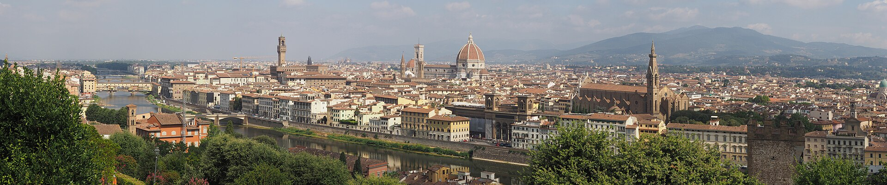
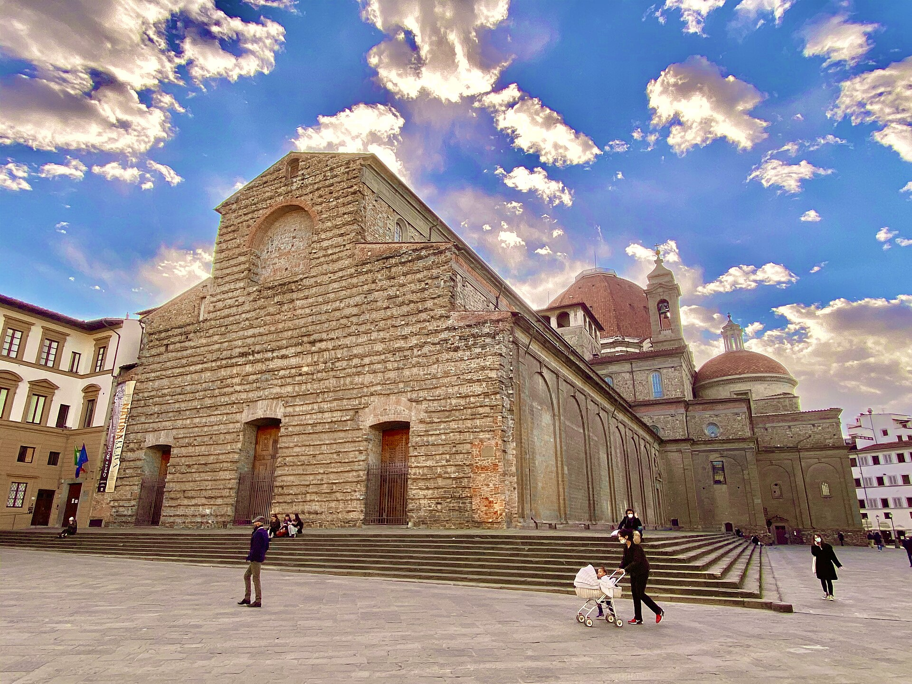

Firenze
佛罗伦萨
文艺复兴的摇篮 · 一个家族与一群天才的合同期城市
阿诺河畔的托斯卡纳首府，1982 年整座老城列入世界遗产。15 世纪，美第奇家族的银行资本与艺术家天才在这里完成了一次历史性合谋：布鲁内莱斯基的穹顶、多纳泰罗的青铜、波提切利与达芬奇的画布、米开朗基罗的大理石--“文艺复兴”这个词，就是这座城市的简历。
今天的佛罗伦萨依然紧凑到可以用脚丈量：从乌菲兹到老桥 10 分钟，从大教堂到学院美术馆 8 分钟。城市小，密度大--这是它对游客最大的慈悲与最大的考验。
大区托斯卡纳 Toscana
人口约 38 万
海拔50 米
10 月气温12-21°C
机场Peretola（FLR）
火车站Firenze S.M.N.
美第奇足迹一日线
- 圣洛伦佐教堂与美第奇礼拜堂（家族陵墓）
- 旧宫与西尼奥利亚广场（共和国政治中心）
- 乌菲兹（家族办公室改的美术馆）
- 瓦萨里走廊穿过老桥 -> 碧提宫与波波里花园
顺路推荐
- Oltrarno 阿诺河南岸：手工匠人作坊与本地餐厅
- 中央市场 Mercato Centrale：一楼菜场二楼美食层
- 圣十字教堂：米开朗基罗、伽利略、马基雅维利之墓
- 托斯卡纳一日游：锡耶纳 / 圣吉米尼亚诺 / 比萨（火车 1-1.5h）
景点导览
Da Vedere · 9 处

美术馆
乌菲兹美术馆Galleria degli Uffizi
文艺复兴的圣殿：美第奇的办公室里挂着半个艺术史

美术馆
学院美术馆Galleria dell'Accademia
为了大卫一个人来，也值--何况路上还有四尊“未完成”

教堂
圣母百花大教堂建筑群Cattedrale di Santa Maria del Fiore
布鲁内莱斯基的穹顶：文艺复兴建筑的第一声啼哭

礼拜堂
美第奇礼拜堂Cappelle Medicee
米开朗基罗《昼》《夜》《晨》《暮》：一座家族陵墓的未完成挽歌

宫殿
碧提宫Palazzo Pitti
美第奇的主居与“挂到天花板”的皇家画廊

花园
波波里花园Giardino di Boboli
藏在碧提宫后山的文艺复兴“绿色剧场”

桥梁
老桥Ponte Vecchio
桥上开店一千年：金匠、屠夫与一条皇室空中走廊

广场
西尼奥利亚广场Piazza della Signoria
佛罗伦萨的露天雕塑博物馆与共和国的政治剧场

观景
米开朗基罗广场Piazzale Michelangelo
全城最著名的落日机位：大卫的青铜背影对着整座文艺复兴
实用贴士
Consigli
- 乌菲兹、学院美术馆、碧提宫均周一闭馆--行程务必避开“周一三连闭”
- 两大美术馆提前 1-2 月官网订时段票，旺季现场排队 1-2 小时起
- 老城全靠步行，石板路+爬塔+登顶，穿最舒服的鞋
- 佛罗伦萨牛排 bistecca alla fiorentina 按公斤计价（约 €50-60/kg），两人点 1 公斤即可
- 10 月偶有阵雨，轻便雨衣比伞实用（老城巷道风大）
- 住宿选老城或 SMN 车站周边：拖行李过石板路与台阶是体能项目
- 黄昏的米开朗基罗广场是免费的“收官仪式”，请把它排进每个在佛罗伦萨的日子